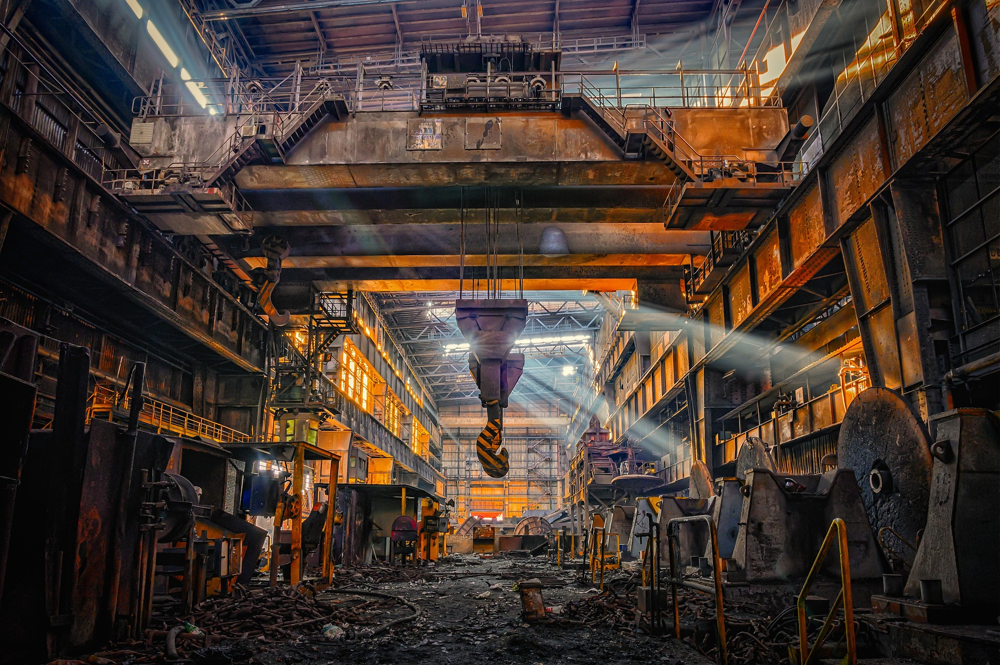
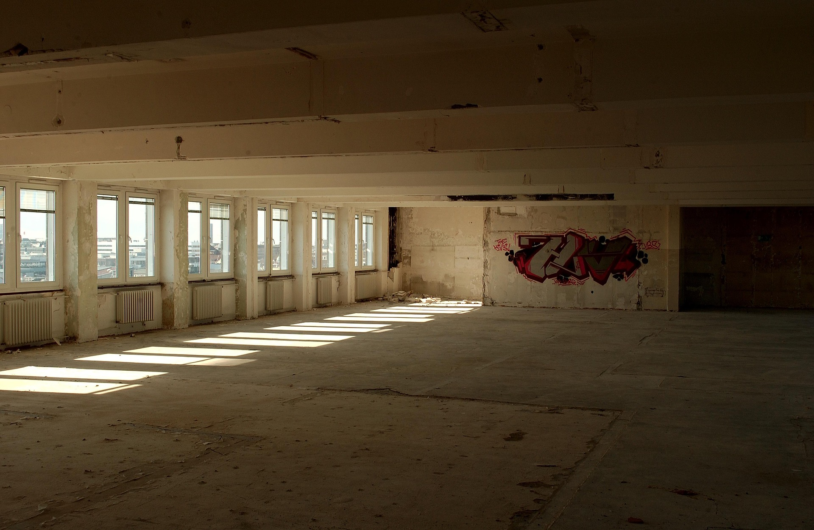
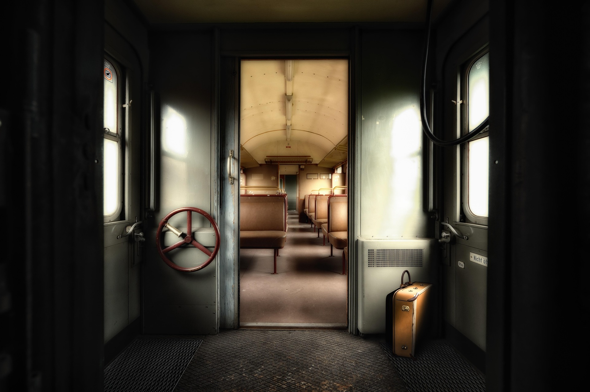

Ein Archiv für überwucherte Orte, vergessene Räume und die Echos vergangener Geschichten.
Verlassene Orte
Archivierte Fotos
Monatliche Nutzer
Teammitglieder
ECHORUIN ist ein digitales Archiv vergessener Orte.
Es sammelt, dokumentiert und bewahrt Lost Places – überwucherte Räume,
verlassene Gebäude und die stillen Echos ihrer Geschichten –
auf einer modernen, interaktiven Karte.
Der Fokus liegt auf Dokumentation, nicht auf Erkundung.

Riesige Hallen, gefüllt mit Staub, Lichtstrahlen und dem Echo vergangener Arbeit. Orte, an denen Maschinen schwiegen und die Zeit stehen blieb.

Waggons, die nie ankamen. Sitze, die Geschichten tragen. Ein Moment, eingefroren zwischen Abfahrt und Ankunft.